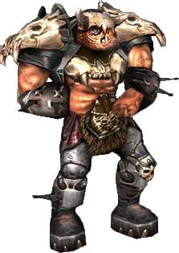
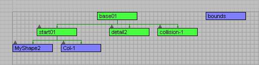

Introduction Good ol classic orc.DTS (Dynamix Three Space) is the file format Torque uses for
detailed 3d objects. Everything from interactive shapes like
characters, vehicles, and weapons to static environment art like
foliage and rocks will be brought into your game as a DTS. Basic DTS HierarchyNo matter the complexity, a dts shape will always be structured the same way. A series of nodes and meshes, the basic hierarchy looks like the image shown.  This image shows the hierarchy from within 3DSMax, other modeling programs will have similar setups. First is a base node, which simply acts as the beginning of the
chain. Under base is the start, detail, and collision markers. These
all perform different tasks. The process for building this hierarchy varies from application
to application, so don't worry if you have no idea how to set it up (or
even if you didn't understand a word of that last paragraph); you'll be
made a pro in the following tutorials. Besides the base, start, detail, and collision nodes, there are
other nodes which perform different functions. Mount nodes are used to
attach one dts to another. There are nodes which define the location of
the muzzle as well as the shell ejection point for weapons. There are
vehicle specific nodes, as well, which perform a number of functions.
For instance, there is a node which identifes the tips of a flying
vehicle's wings for jet contrails is a great example of this. Getting Your Art Into TorqueThe Torque art pipeline can best be illustrated with a simple list: 1. Model and texture your shape Take special notice of steps 2, 4, 6, and 8. You should be
checking your work whenever you do something major. This is because
most errors you'll recieve are simple ones that are easy to fix if you
dont build on top of them. Getting into the habit of making sure things
are perfect as you work will stop you from ending up with a compound
problem down the line. Over the course of these tutorials you'll be instructed on what you need to look for in order to ensure a flawless DTS. AnimationAnimation can be exported within the DTS shape or as a separate
animation file known as a DSQ. DSQs are typically used for things like
characters, while simpler shapes have the animation exported within the
DTS. The advantage to exporting character animation as a DSQ is that
the sequences can be used by more than one model provided they were
rigged with the same skeleton. Needless to say, creating one set of
animations that each character in your game will use can save weeks of
developement time, which is why its such a good practice. Simple animations (like the spinning of a radar dish) or
animations associated with vehicles or weapons can be exported with the
DTS, since those sequences are very unique and can only be used by the
shapes they were created for. Moving OnThe DTS format is exceptionally versatile. If you can imagine it and
have the ability to build it, you can get it into your Torque game.
Over the course of the official DTS lessons, you'll learn how to do
everything from simple shapes to complex characters and vehicles. Creating ShapesThere are a variety of 3d modelling packages that can be used to create
DTS shapes. Use the Table of Contents to see more documentation that is
relevant to each tool. 3D Studio Max - Autodesk 3ds Max 8 software provides new asset management, character development, UV mapping, and scripting tools designed to maximize your productivity. Blender 3D - Steep learning curve, but it is much more robust than many other commercial modeling programs. Has an aditional benefit of being free and open-source software. Cinema 4D - Maxon's CINEMA 4D provides ease of use and legendary stability for modelling and animation (although no exporter exists for either DTS or DIF). Also from Maxon is Body Paint which offers hassle-free texturing that lets you quickly paint highly detailed textures directly on your 3D objects. Lightwave - LightWave 3D has a long history and brand name in the computer graphics industry. It has a great polygonal modeler, also excellent UV tools, which is very important for real-time graphics. Maya - AutoDesk Maya software is the world's most powerfully integrated 3D modeling, animation, effects and rendering solution. Milkshape 3D - MilkShape 3D is a low-polygon modeler, which was initially designed for Half-Life. During the development, many file formats have been added. The DTS Plus Exporter should be added as the default DTS Exporter lacks the same amount of functionality. SOFTIMAGE|XSI - Steep learning curve, very full featured, and widely used in the game industry. Focused on character development. Powerful animation system, game development centric asset management integration (Alienbrain), facial expressions system (via SOFTIMAGE|FACE ROBOT). Excellent subdivision surface modelling tools. |
{kind=link}